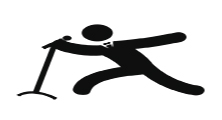
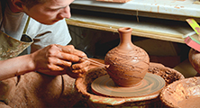
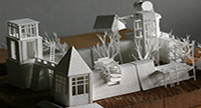
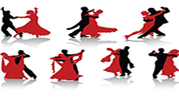

Christ University Open Electives
Faculty Of Engineering, Christ (Deemed to be University) is proud to introduce a new subject Global electives. This subject will enable the student to select a inter-denery subject offered to them according to their taste and area of interest.
The courses offered are as follow:

Voice Developement & Theraphy
A holistic system for the developement of the voice apparatus, as well as a system that can be perceived by any person, regardless of his professional training and way of thinking.

Pottery
An exciting journey through the world of clay and pottery.
>
Asian Cuisine
Bringing you the joy of cooking with Asian cusine. A subject brought to you by thee department of Hotel Management.
This course is sure to set your taste buds on fire and let you explore the back world where the magic taste is bought to life.
>
Intellectual Property Rights
This course intends to equip students to understand the policies and procedures they may have to rely on for the purpose of protecting their inventions or creative works during the course of their study or employment.
>

Unfolding paper
The course introduces handmade paper making to awe-inspiring art and spatial forms using paper. The course would be jointly offered by School of Architecture and Centre for Social action.
>

Movement Training
This course aims at making the students aware of their free bodily movements, using various dance styles and techniques. During this 45 hour course, the students will gain the ability to move their bodies rhythmically through dance. >
Digital Writing
This course gives the students ot different writing techniques with respect to tone, purpose personas etc..
In a era of digital information it teaches individuals to use social meada and communication effectively
>
Organizational behaviour and dev.
A Social worker often works/practices in organizations, or through organizations informal or formal. It is imperative that they understand organizations and learn to lead and motivate their fellow workers
>
Dance
A holistic system for the developement of the voice apparatus, as well as a system that can be perceived by any person, regardless of his professional training and way of thinking.
>
Intellectual Property Rights
This course intends to equip students to understand the policies and procedures they may have to rely on for the purpose of protecting their inventions or creative works during the course of their study or employment.
>
Unfolding paper
The course introduces handmade paper making to awe-inspiring art and spatial forms using paper. The course would be jointly offered by School of Architecture and Centre for Social action.
>
Dance
A holistic system for the developement of the voice apparatus, as well as a system that can be perceived by any person, regardless of his professional training and way of thinking.
>